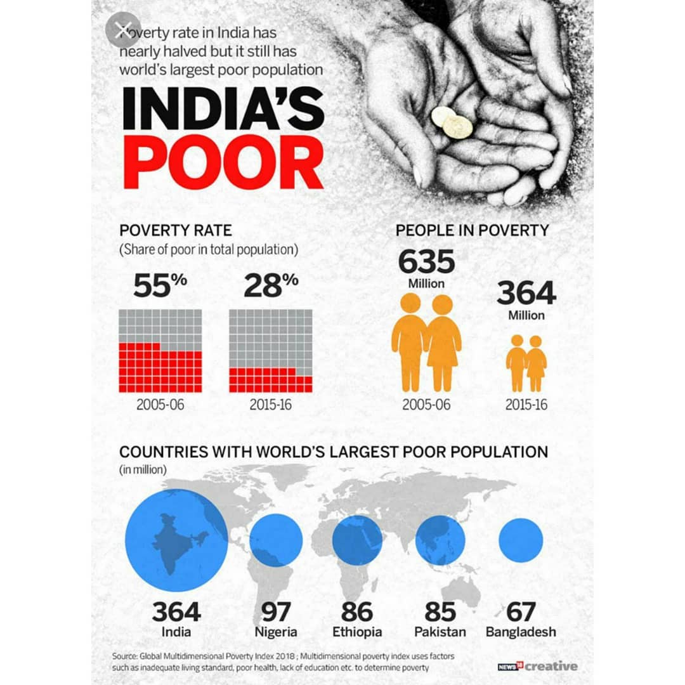
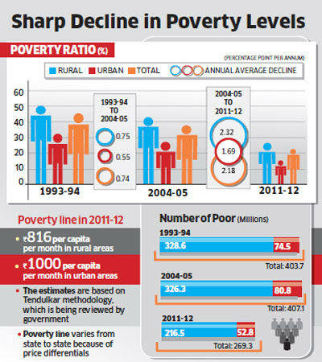
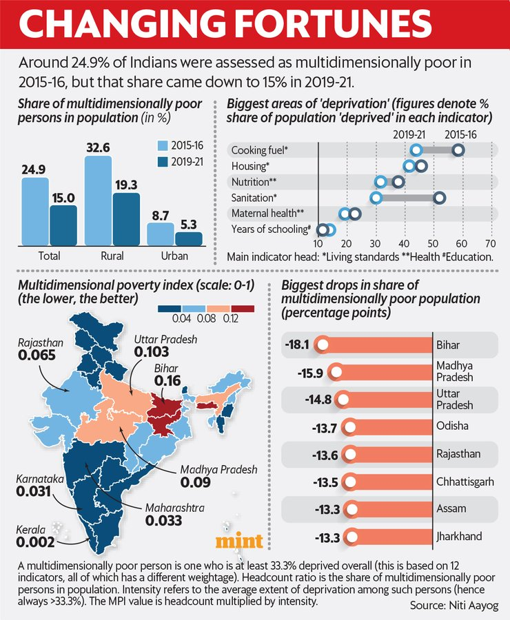
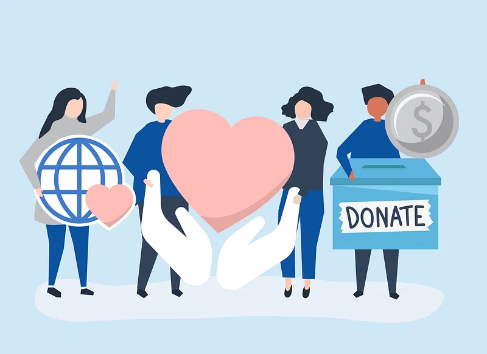
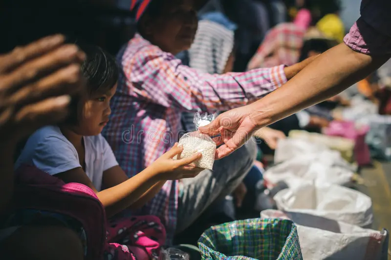

Help us End Poverty: Your Contribution Matters!
.jpg)
“Your support has made a significant difference in my life
and the lives of many in our community here in India. Thanks to your
kindness, I have access to better education, and I am witnessing
positive transformations. Your contribution is not just a donation;
it's a beacon of hope for a brighter future. ” - Priya,
Beneficiary
“When I decided to contribute to this cause, I had no idea
how profoundly it would touch my heart. Visiting the communities we
support in India and witnessing the resilience and joy of the people
has been life-changing. Join me in making a difference in the lives of
our fellow Indians.” - Arjun, Donor
“Being part of the initiatives led by this organization has
empowered our Indian community. We've witnessed positive changes in
education, healthcare, and overall well-being. I am proud to share my
story as an I` ndian and encourage others to join us in making lasting
changes in our beautiful country.” - Kavita, Community Member
“As a volunteer here in India, I've witnessed the impactful
work of this organization. From supporting local artisans to improving
access to clean water, every effort is a step towards breaking the
cycle of poverty in India. Join us, and let's create a positive impact
together.” - Ananya, Volunteer

As of the latest available data, the poverty rate in India remains a
significant concern, with a substantial portion of the population
facing economic challenges. According to official statistics from
the National Sample Survey Office (NSSO), around 21.9% of the Indian
population was living below the poverty line as of 2018. This figure
underscores the persistent issue of poverty, despite ongoing
economic development initiatives and efforts to improve living
standards.

Income disparities and regional variations contribute to the
complexity of the poverty situation in India. The poverty rate is
not uniform across the country, with certain states and rural areas
experiencing higher levels of deprivation. For instance, states like
Bihar and Jharkhand have reported higher poverty rates compared to
more economically prosperous regions. Addressing these regional
variations and implementing targeted policies to uplift marginalized
communities are crucial steps toward alleviating poverty on a
broader scale.

Multidimensional aspects of poverty, such as access to education,
healthcare, and basic amenities, further shape the narrative.
According to the Global Multidimensional Poverty Index (MPI),
developed by the United Nations Development Programme (UNDP), India
has made progress in reducing multidimensional poverty. The MPI
takes into account factors like nutrition, child mortality, and
education, providing a more comprehensive understanding of poverty's
impact on various aspects of people's lives. Despite strides in
certain areas, ongoing efforts and targeted interventions are
essential to comprehensively address the multifaceted nature of
poverty in India.

BE PART OF THE STORY
HOW YOUR DONATION HELPS
- Providing Basic Necessities
- Empowering Education and Skills Development
- Improving Healthcare Access
- Community Development and Sustainable Solutions
